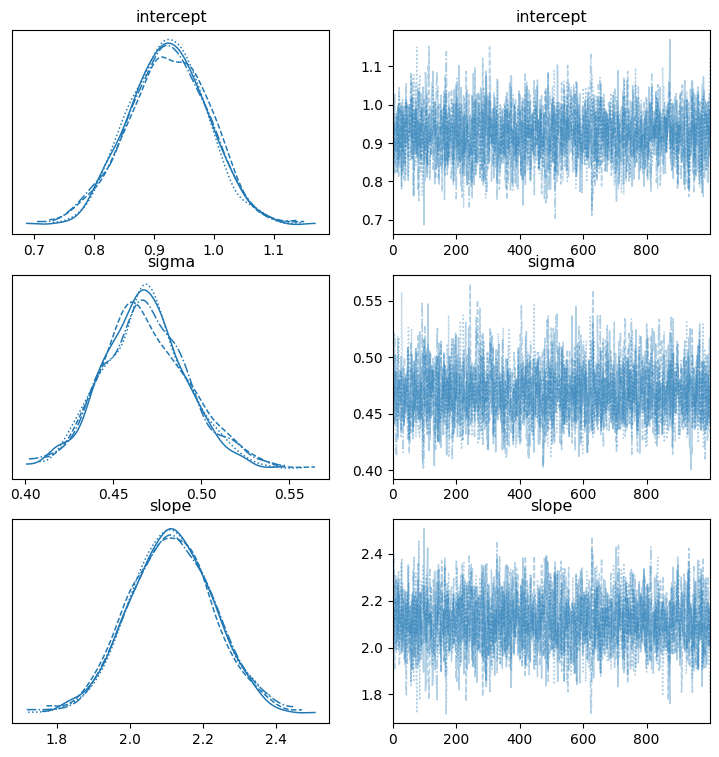

A Quick Example of Bayesian Regression with numpyro
Why does this exist?
As a practitioner, learning to apply Bayesian techniques (on nights/weekends) is daunting. You need to simultaneously walk down two learning paths:
- Learning the math and the concepts
- Learning to express these concepts in code (using a PPL)
It’s like studying astrodynamics while learning the controls of a spaceship. You’re learning how to navigate in 3 dimensions while also learning how the spaceship works. But the reward for this effort is that we get to travel further than we could have before.
Learning the code
I primarily write in Python, so there already exist several choices of Probabilistic Programming Languages (PPLs) and supporting libraries. pymc wins in terms of initial ease of use but the non-trivial examples look intimidating. Further, pymc has been undergoing several transitions lately that I just want something a little more stable.
I chose numpyro because of how it seems to fit that ‘sweet spot’ between having a flexible low-level API and ease of use. Moreover, it personally looked more approachable to me once I understood some of the basic primitives.
However, as a prerequisite to learning numpyro we also need some understanding of jax, xarray, and pyro. You also need to know arviz for handy plotting of bayesian models, but luckily arviz is compatible with other PPL’s.
I’m assuming you already understand linear regression but want to implement a Bayesian regression using numpyro.
To keep this short I’ll be mainly focusing on numpyro usage rather than the theory.
0. Our Simulated Data
We’ll use a toy dataset for this simple linear regression example, borrowed from the pymc example from GLM:Linear Regression
import numpy as np
# Simulate Data
np.random.seed(42)
size = 200
true_intercept = 1
true_slope = 2
x = np.linspace(0, 1, size)
true_regression_line = true_intercept + true_slope * x
# Add noise term
y = true_regression_line + np.random.normal(0, 0.5, size)
plt.scatter(x, y, alpha=0.8)
plt.plot(x, true_regression_line, c='r', label='True Regression Line')
plt.legend();
1. Specify the model on paper
Before you can write any code, you should draw out your understanding of the model. My workflow starts with a “pen and paper” expression of the model which then gets translated into numpyro later.
Starting from the additive error model
You may have learned the ‘additive error’ form of linear regression and think of a the model as:
\[ \hat{y}_i = \alpha + \beta x_i + \epsilon, \quad \epsilon \sim N(0, \sigma) \]
where \(\hat{y}\) is an estimate of the conditional mean of \(y\) given the data, or \(\mathbb{E}[y_i|x_i]\).
Telling the data story with a joint probability distribution
Now, with Bayesian Inference, we must move beyond the additive error model and think more deeply into the data generating process and how to represent the model in terms of parameters and distributions. Ultimately what we aim to achieve is a fully specified model as a joint probability distribution.
We can restate the additive error model as the following:
\[ \begin{aligned} y_i &\sim N(\mu_i, \sigma) \\ \mu_i &= \alpha + \beta x_i \end{aligned} \]
What are the parameters in the additive error model? We can see that \(\alpha\), \(\beta\), and \(\sigma\) are the three unknown (unobserved) parameters while \(x\) is simply our observed price data that we treat as a constant.
Further, we wish to encode our prior knowledge and get more educated guesses about what these parameters might be.
Add in our priors to our model
Recall that with Bayesian inference, we’re dealing with distributions. Our prior knowledge is codified in the prior distributions that we assign for each of our unobserved/latent variables (\(\alpha, \beta, \sigma\) in this case).
Here is an example of our now fully specified model with prior distributions for each of the three parameters:
\[ \begin{aligned} y_i &\sim N(\mu_i, \sigma) \\ \mu_i &= \alpha + \beta x_i\\ \alpha &\sim \mathcal{N}(0,20)\\ \beta &\sim \mathcal{N}(0,20)\\ \sigma &\sim \operatorname{HalfCauchy}(10) \end{aligned} \]
Your choice of prior is incredibly important to your model but it’s outside the scope of this intro. Our main goal is getting the model/machine running to the point where you can inspect and play around with it.
2. Specify the model in numpyro
Once we have our model on paper, we can codify it using numpyro as a python function with JAX arrays x and y as inputs:
import numpyro
import numpyro.distributions as dist
from numpyro.infer import MCMC, NUTS
import jax.numpy as jnp
from jax import random
def numpyro_model(x, y):
# Specify priors with numpyro.sample()
intercept = numpyro.sample("alpha", dist.Normal(0,20))
slope = numpyro.sample("beta", dist.Normal(0,20))
sigma = numpyro.sample("sigma", dist.HalfCauchy(10))
# Likelihood function, or p(y|mu, sigma, x)
mu = numpyro.deterministic('mu', intercept + slope * x)
# Note we set obs=y
likelihood = numpyro.sample("y", dist.Normal(mu, sigma), obs=y)Specify priors with numpyro.sample() and numpyro.distributions
Every random variable gets a numpyro.sample() call which requires a prior distribution from numpyro.distributions as an argument. mu is simply a function of the other random variables and our data x.
If we wanted to save the values of mu for later, we could wrap it in a numpyro.deterministic() function like mu = numpyro.deterministic('mu', intercept + slope * x) but isn’t required. In this case, I’ll make it deterministic so we can use it for plotting, later.
For the likelihood random variable (our y in this case), we add in the parameter obs=y. When we want to do prediction (prior predictive checks or posterior prediction) you can set y=None in the function call.
View the Model with render_model()
We can use the numpyro.render_model() function to display the graphical model and how our data story is shaping up:
numpyro.render_model(numpyro_model, model_args=(x,y))
Light circles represent the unobserved/latent variables in our model, and we’re interested in their posterior distribuitons. The dark circle represents our observed variables.
pymc as a contrast
For those curious how the same model looks in pymc:
# model specifications in PyMC are wrapped in a `with` statement
with pm.Model() as model:
# Define priors
intercept = pm.Normal("alpha", 0, sigma=20)
slope = pm.Normal("beta", 0, sigma=20)
sigma = pm.HalfCauchy("sigma", beta=10)
# Define likelihood
mu = intercept + slope * x
likelihood = pm.Normal("y", mu=mu, sigma=sigma, observed=y)Which is just a little less verbose than our numpyro model when it comes to specification.
3. Inference with MCMC and NUTS
For users familiar with pymc, then at this point we’re done and we can run our Markov Chain Monte Carlo (MCMC) algorithm of choice (in this case, we’ll use the NUTS sampler) to get samples from the posterior distribution and make our model useful.
With pymc being a more ‘batteries-included’ library, we would simply do:
with model:
# draw 1000 posterior samples using NUTS sampling
idata = pm.sample(1000, nuts_sampler='pymc')And we would get an arviz-friendly inference data object idata out that we can then inspect.
In numpyro, inference is slightly more involved. The equivalent to the pymc ‘Inference button’ would look something like:
# Instantiate a `MCMC` object using a NUTS sampler
mcmc = MCMC(sampler=NUTS(numpyro_model),
num_warmup=1000,
num_samples=1000,
num_chains=4)
# Run the MCMC sampler and collect samples
mcmc.run(rng_key=random.PRNGKey(seed=42),
x=x,
y=y)MCMC acts are our entry point into the MCMC algorithms to sample from the posterior. In numpyro the model specification is separate from the ‘inference engine’ to give us the flexibility to choose from different inference methods (i.e. MCMC vs stochastic variational inference) and for tuning/control over the inference process.
If we want to get an arviz.InferenceData object like what we’d have from pymc, we can use the arviz.from_numpyro function:
# Convert the `MCMC` object to an arviz.InferenceData object
idata = az.from_numpyro(mcmc)Which will let us do more of data visualization with arviz.
4. Results
At this point, we can collect samples from the posterior, inspect how our MCMC performed, and interpret the results. numpyro has some built in methods to help here, but most users will use the cross-language arviz library.
Get a summary table with .print_summary() or az.summary()
We can use either the .print_summary() method or the az.summary() function from arviz to get a table of the model results.
# Get a summary of all non-deterministic random variables
mcmc.print_summary()
mean std median 5.0% 95.0% n_eff r_hat
intercept 0.92 0.07 0.92 0.82 1.03 1942.24 1.00
sigma 0.47 0.02 0.47 0.43 0.51 1866.17 1.00
slope 2.11 0.11 2.11 1.92 2.30 1907.32 1.00
Number of divergences: 0This table looks like the familiar regression summary table except for two columns: n_eff and r_hat.
n_eff: Number of effective samples, an indicator of how well the MCMC was able to sample from the posterior. Higher is better.r_hat: Gelman-Rubin diagnostic \(\hat{R}\), an indicator of sampler convergence. Ideally \(\hat{R} \approx 1.00\).
Inspect the trace with az.plot_trace()
We need to check to see how well our MCMC sampler performed. Aside from the n_eff and r_hat indicators from the summary table, we can use the az.plot_trace function to get a summary plot:
az.plot_trace(mcmc, var_names=['intercept', 'slope', 'sigma'], figsize=(9,9));
The plots on the left show the samples from the posterior distribution for each chain and the plots on the right trace the path of our sampler across the posterior distribution. The plots of right should lack a distinctive trend and ideally shouldn’t have long flat lines going left to right. We see our happy fuzzy caterpillars on the right so our MCMC performed well, and if we saw something different it would indicate that something is wrong (poor prior specification, for instance).
For more examples of what we can use arviz to do, see the arviz example gallery.
Posterior Predictive
The Predictive helper class will output posterior predictive samples if you give it posterior_samples as an argument (for prior predictive sampling, we just let it know the number of samples)
## get representative sample of posterior
posterior_samples = mcmc.get_samples()
# forecasted marginal aka posterior predictive
predictive = Predictive(numpyro_model, posterior_samples=posterior_samples)
# Note that we run the model with y=None
posterior_predictive = predictive(random.PRNGKey(1), x=x, y=None)Plot the fitted regression line with az.plot_lm
For the last part of this intro we can plot the fitted line along with the highest density predictive interval (hpdi) by creating an arviz.InferenceData object from our model and passing along our posterior_predictive samples:
# Convert the `MCMC` object into InferenceData and add in the `posterior_predictive`
# as an additional dataset that we can use for our `arviz` plots
idata = az.from_numpyro(mcmc, posterior_predictive=posterior_predictive)Then we use az.plot_lm on this arviz.InferenceData object:
# Customize arviz style and plot
az.style.use('arviz-bluish')
az.plot_lm(y='y', idata=idata, y_model='mu', kind_pp='hdi',
kind_model='hdi', figsize=(6,6), textsize=9)
Here we set the plot to display the hdi or the 90% highest density interval that captures our uncertainty in our parameter estimates (aka the epistemic uncertainty).
Full Code
import numpy as np
import numpyro
import numpyro.distributions as dist
from numpyro.infer import MCMC, NUTS
import jax.numpy as jnp
from jax import random
# 0. Simulate Data
# ---
np.random.seed(42)
size = 200
true_intercept = 1
true_slope = 2
x = np.linspace(0, 1, size)
true_regression_line = true_intercept + true_slope * x
# Add noise term
y = true_regression_line + np.random.normal(0, 0.5, size)
# Plot simulated data
plt.scatter(x, y, alpha=0.8)
plt.plot(x, true_regression_line, c='r', label='True Regression Line')
plt.legend();
# 2. Specify the model in numpyro
# ---
def numpyro_model(x, y):
# Specify priors with numpyro.sample()
intercept = numpyro.sample("alpha", dist.Normal(0,20))
slope = numpyro.sample("beta", dist.Normal(0,20))
sigma = numpyro.sample("sigma", dist.HalfCauchy(10))
# Likelihood function, or p(y|mu, sigma, x)
mu = numpyro.deterministic('mu', intercept + slope * x)
# Note we set obs=y
likelihood = numpyro.sample("y", dist.Normal(mu, sigma), obs=y)
# 3. Inference with MCMC and NUTS
# ---
# Instantiate a `MCMC` object using a NUTS sampler
mcmc = MCMC(sampler=NUTS(numpyro_model),
num_warmup=1000,
num_samples=1000,
num_chains=4)
# Run the MCMC sampler and collect samples
mcmc.run(rng_key=random.PRNGKey(seed=42),
x=x,
y=y)
# 4. Results
# ---
# Get a summary of all non-deterministic random variables
mcmc.print_summary()
## get representative sample of posterior
posterior_samples = mcmc.get_samples()
# forecasted marginal aka posterior predictive
predictive = Predictive(numpyro_model, posterior_samples=posterior_samples)
# Note that we run the model with y=None
posterior_predictive = predictive(random.PRNGKey(1), x=x, y=None)
# Convert the `MCMC` object into InferenceData and add in the `posterior_predictive`
# as an additional dataset that we can use for our `arviz` plots
idata = az.from_numpyro(mcmc, posterior_predictive=posterior_predictive)
# Customize arviz style and plot
az.style.use('arviz-bluish')
az.plot_lm(y='y', idata=idata, y_model='mu', kind_pp='hdi',
kind_model='hdi', figsize=(6,6), textsize=9)